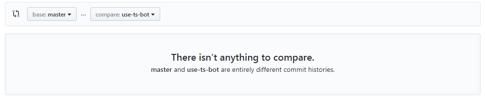
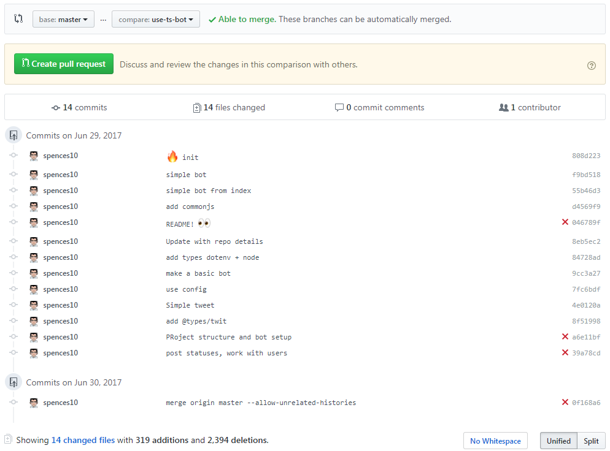

Git ` — allow-unrelated-histories`
How to combine two separate unrelated Git repositories into one with single history timeline.
Just adding a quick note on this…
I had a project that started off as it’s own project but it ended up needing to go into an already existing project, so I thought ok add it as a new branch on the existing project with git remote add origin then push the changes up to the origin then all is well with the world.
That was until I tried to compare the branches…

There isn’t anything to compare? Bit misleading there as there is but the commit histories are different.
How do you get around it, well the first Google result was a bit sparse with the details but then I found this which was more helpful.
I needed to merge the disparate branches which is now disabled by default in git but can be enabled with the --allow-unrelated-histories flag.
git merge origin use-ts-bot --allow-unrelated-histories
This brought up, understandably, a few conflicts with the branch I wanted to merge with the origin.
Auto-merging package.json
CONFLICT (add/add): Merge conflict in package.json
Auto-merging package-lock.json
CONFLICT (add/add): Merge conflict in package-lock.json
Auto-merging README.md
CONFLICT (add/add): Merge conflict in README.md
Auto-merging .gitignore
CONFLICT (add/add): Merge conflict in .gitignore
Automatic merge failed; fix conflicts and then commit the result.
To get around this I just took the latest version of the use-ts-bot branch from my GitHub account and then and used that in place of the origin conflicts as what I’m working on will ultimately replace the master branch, so it was just a copy pasta into my VSCode then recommit the changes files.
Phew! I now have a branch I can compare with the master that I will one day make a PR for 😅
